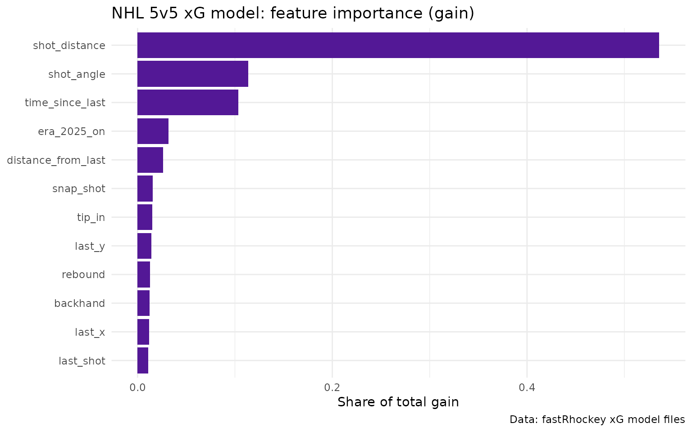
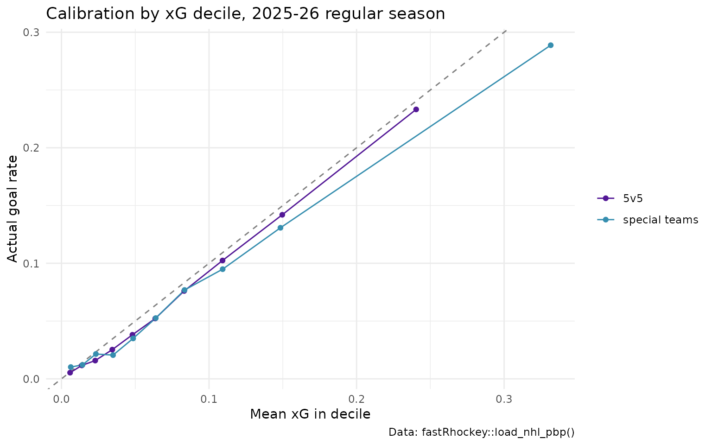
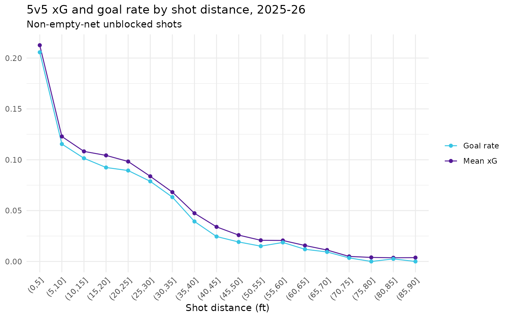

NHL Expected Goals (xG) in fastRhockey: How the Model Works
Saiem Gilani, Ben Howell
Source:vignettes/articles/nhl-expected-goals-xg-model.Rmd
nhl-expected-goals-xg-model.RmdExpected goals (xG) is the probability that an unblocked shot becomes a goal, given where it was taken from, how it was taken, and what happened just before it. A tip-in from the crease might carry an xG of 0.25; a wrist shot from the point, 0.02. Add xG up over a game or a season and you get the number of goals an average shooter would have scored on those chances. The gap between goals and xG separates finishing and goaltending from shot generation.
This article explains the model behind the xg column in
fastRhockey’s NHL play-by-play: what it predicts, which
features it uses, how it was trained, how well it does, and where it is
weakest. Every number in a code block below is computed when the page is
built. Numbers from training are quoted from the official
model card and labelled that way.
The PWHL has its own, different model. See the PWHL expected goals article.
Known coordinate issue (fix pending). NHL
x_fixed / y_fixed are meant to put the home
team shooting right. The code that builds them
(.fix_coordinates() in R/nhl_game_feed.R)
reads the NHL API’s homeTeamDefendingSide but gives the
same answer for both sides: every home-team event gets
x_fixed = abs(x) and every away-team event
x_fixed = -abs(x). Shots from the attacking zone come out
right, but any event a team makes in its own half (a hit,
giveaway, blocked shot or long shot) is mirrored into its attacking
half. That affects shot_distance and
shot_angle for shots from beyond centre ice, and the xG
features built from the previous event’s location (last_x,
last_y, distance_from_last, rush and cross-ice
flags). A fix is pending. The section on this issue shows
the effect in the data.
Which xG are you looking at?
There are two ways to get NHL xG from fastRhockey. They
use the same model files and, as shown below, give the
same numbers.
Published xg column |
Computed locally | |
|---|---|---|
| How you get it |
load_nhl_pbp(), load_nhl_pbp_full()
|
nhl_game_pbp() / nhl_game_feed(), or
helper_nhl_calculate_xg() on your own frame |
| Model | The committed 2026-04 boosters | The same boosters, downloaded once and cached by
.onLoad()
|
Needs xgboost? |
No | Yes. Without it nhl_game_pbp() returns
xg = NA with a message, and
helper_nhl_calculate_xg() stops with an error. |
| Precision | Rounded to 4 decimal places | Full precision |
| When it changes | When a season file is rebuilt | When you call refresh_xg_models() after a retrain |
Two practical notes on helper_nhl_calculate_xg():
-
Call it one game at a time. It joins predictions
back to the play-by-play by
event_id, which is only unique within a game. Run on several games at once, the join multiplies rows.nhl_game_pbp()already works per game; for a multi-game frame, split bygame_idfirst (see reproducing the published values). - The model files live in
tools::R_user_dir("fastRhockey", "cache").refresh_xg_models()deletes them and downloads the current versions.
What does the model predict?
The model scores unblocked shot attempts, the events
hockey analysts call Fenwick events: SHOT (on goal),
MISSED_SHOT and GOAL. Blocked shots never
reach the goalie, so they get no xG. Before scoring, the feature builder
(helper_nhl_prepare_xg_data()) drops:
- shootout attempts (
period_type == "SHOOTOUT"); - penalty shots, which get a constant instead (below);
- line changes (
CHANGE), so the “previous event” is always a hockey play; - shots whose previous event is not one of
FACEOFF,GIVEAWAY,TAKEAWAY,BLOCKED_SHOT,HIT,MISSED_SHOT,SHOT,STOP,PENALTYorGOAL.
The output is three components:
-
A 5v5 model, for every shot where
strength_state == "5v5". - A special-teams model, for every other strength state: power play, shorthanded, 4v4, 3v3 and empty-net situations such as 6v5.
- A penalty-shot constant, the historical conversion rate of penalty shots, assigned to every penalty shot.
Both models are XGBoost binary classifiers with a log-loss objective.
They follow the recipe of Daniel Morse’s hockeyR xG model,
re-fit on the fastRhockey NHL corpus.
Which features does it use?
All features are built in helper_nhl_prepare_xg_data()
from the play-by-play columns listed in ?nhl_xg.
| Group | Features | Notes |
|---|---|---|
| Shot geometry |
shot_distance, shot_angle
|
Feet and degrees to the attacked net (at x = ±89 ft) |
| Shot type |
wrist_shot, snap_shot,
slap_shot, backhand, tip_in,
deflected, wrap_around, poke,
batted, between_legs, cradle
|
One-hot. The newer NHL API’s lowercase types (wrist,
tip-in, bat, …) are mapped back to the older
title-case names the model was trained on |
| Previous event |
last_faceoff, last_shot,
last_missed_shot, last_blocked_shot,
last_giveaway, last_takeaway,
last_hit, last_stop,
last_penalty, last_goal
|
One-hot type of the event before the shot, within the same game and period |
| Pre-shot movement |
time_since_last, distance_from_last,
last_x, last_y
|
Seconds and feet since the previous event, and where it happened |
| Tactical flags |
rebound, rush,
cross_ice_event
|
Rebound: previous event an unblocked shot within 2 s. Rush: previous
event in the neutral or defensive zone within 4 s. Cross-ice: previous
event in the offensive zone on the other side of the ice (y
crossing ±3 ft) within 2 s |
| Game state | empty_net |
The shot was at an empty net |
| Era |
era_2011_2013, era_2014_2018,
era_2019_2021, era_2022_2024,
era_2025_on
|
One-hot season buckets, so rule and tracking changes are modelled instead of averaged away |
| Special teams only |
total_skaters_on,
event_team_advantage
|
Skaters on the ice, and the shooting team’s skater edge |
You can read the exact feature lists out of the cached model metadata.
library(fastRhockey)
library(dplyr)
library(ggplot2)
xg_env <- fastRhockey:::.xg_env
xg_ready <- requireNamespace("xgboost", quietly = TRUE) &&
!is.null(xg_env$xg_model_5v5)
xg_ready
#> [1] TRUE
xg_env$xg_feature_names_5v5
#> [1] "era_2011_2013" "era_2014_2018" "era_2019_2021"
#> [4] "era_2022_2024" "era_2025_on" "shot_distance"
#> [7] "shot_angle" "rebound" "rush"
#> [10] "time_since_last" "distance_from_last" "cross_ice_event"
#> [13] "empty_net" "last_x" "last_y"
#> [16] "wrist_shot" "snap_shot" "slap_shot"
#> [19] "backhand" "wrap_around" "tip_in"
#> [22] "deflected" "poke" "batted"
#> [25] "between_legs" "cradle" "last_blocked_shot"
#> [28] "last_shot" "last_giveaway" "last_hit"
#> [31] "last_takeaway" "last_faceoff" "last_missed_shot"
#> [34] "last_stop" "last_penalty" "last_goal"
setdiff(xg_env$xg_feature_names_st, xg_env$xg_feature_names_5v5)
#> [1] "total_skaters_on" "event_team_advantage"
# the penalty-shot constant
xg_env$xg_model_ps
#> [1] 0.3202197What does the 5v5 model lean on?
Gain is the share of the model’s total loss reduction that comes from splits on each feature.
imp <- xgboost::xgb.importance(model = xg_env$xg_model_5v5)
head(imp[, c("Feature", "Gain")], 12)
#> Feature Gain
#> <char> <num>
#> 1: shot_distance 0.30132183
#> 2: empty_net 0.14151940
#> 3: wrist_shot 0.07363369
#> 4: snap_shot 0.06846821
#> 5: time_since_last 0.06553750
#> 6: shot_angle 0.05901166
#> 7: slap_shot 0.05277227
#> 8: tip_in 0.03401052
#> 9: era_2025_on 0.02928283
#> 10: distance_from_last 0.02679692
#> 11: rebound 0.02642182
#> 12: backhand 0.02365784
imp %>%
head(12) %>%
ggplot(aes(x = Gain, y = reorder(Feature, Gain))) +
geom_col(fill = "#531896") +
labs(
title = "NHL 5v5 xG model: feature importance (gain)",
x = "Share of total gain", y = NULL,
caption = "Data: fastRhockey xG model files"
) +
theme_minimal()
Distance dominates, as in every public xG model. Empty net ranks high because it is rare but decisive. Shot type and the time since the previous event come next.
How was it trained?
As reported in the model card and its model registry:
- Data: the NHL play-by-play corpus of the fastRhockey-nhl-data repository, grouped into the five era buckets above. The registry lists the training seasons as 2011 to 2026.
-
Split: an 80/20 train/holdout split grouped by
game_id(no game appears on both sides), seed 37, with grouped 5-fold cross-validation on the training side. - Algorithm: XGBoost, binary log-loss.
- Committed fit: the boosters in use are the 2026-04 fit.
- Training-time metrics (cross-validation): 5v5 CV AUC 0.8322 and CV log-loss 0.2053; special teams CV AUC 0.8213 and CV log-loss 0.2567.
- Re-scored held-out games: when the card re-scores the committed boosters on a replay of the seed-37 holdout from today’s corpus, it reports AUC 0.7783 (5v5, log-loss 0.2189 against a 0.2488 constant baseline) and 0.7605 (special teams, log-loss 0.2999 against 0.3293). The card labels this a near-holdout, because some of those games were in the boosters’ training data.
The card itself notes that the CV figures could not be reproduced from the current corpus and that a retrain is pending. Treat the near-holdout AUC of about 0.76 to 0.78 as the more realistic figure.
How well does it do on 2025-26?
Below, the published xg column is scored against the
2025-26 regular season. The registry’s training window runs through
2026, so the 2026-04 fit may have seen part of this season. Read this as
a sanity check, not a clean holdout.
pbp <- load_nhl_pbp(seasons = 2026)
shots <- pbp %>%
filter(season_type == "R", !is.na(xg)) %>%
mutate(
goal = as.integer(event_type == "GOAL"),
model = if_else(strength_state == "5v5", "5v5", "special teams")
)
rank_auc <- function(y, p) {
r <- rank(p)
n1 <- sum(y == 1)
n0 <- sum(y == 0)
(sum(r[y == 1]) - n1 * (n1 + 1) / 2) / (n1 * n0)
}
log_loss <- function(y, p) {
p <- pmin(pmax(p, 1e-15), 1 - 1e-15)
-mean(y * log(p) + (1 - y) * log(1 - p))
}
eval_tbl <- shots %>%
group_by(model) %>%
summarise(
shots = n(),
goals = sum(goal),
sum_xg = round(sum(xg), 1),
goals_per_xg = round(goals / sum(xg), 3),
log_loss = round(log_loss(goal, xg), 4),
baseline_log_loss = round(log_loss(goal, rep(mean(goal), n())), 4),
rank_auc = round(rank_auc(goal, xg), 4),
.groups = "drop"
)
eval_tbl
#> # A tibble: 2 × 8
#> model shots goals sum_xg goals_per_xg log_loss baseline_log_loss rank_auc
#> <chr> <int> <int> <dbl> <dbl> <dbl> <dbl> <dbl>
#> 1 5v5 86220 5260 5829 0.902 0.197 0.230 0.789
#> 2 special t… 23857 2625 3038. 0.864 0.301 0.347 0.750On this season the 5v5 model ranks shots with an AUC of 0.7886 and beats a constant-rate baseline on log-loss. Its level is off: goals divided by xG is 0.902 at 5v5 and 0.864 on special teams, so summed xG runs higher than actual goals this season.
Is it calibrated?
A calibrated model’s shots with xG near 0.10 go in about 10% of the time. Here the shots are split into ten equal-sized bins by xG.
calib <- shots %>%
group_by(model, decile = ntile(xg, 10)) %>%
summarise(mean_xg = mean(xg), goal_rate = mean(goal), shots = n(), .groups = "drop")
ggplot(calib, aes(x = mean_xg, y = goal_rate, colour = model)) +
geom_abline(slope = 1, intercept = 0, linetype = "dashed", colour = "grey50") +
geom_line() +
geom_point() +
scale_colour_manual(values = c("5v5" = "#531896", "special teams" = "#368EAF")) +
labs(
title = "Calibration by xG decile, 2025-26 regular season",
x = "Mean xG in decile", y = "Actual goal rate", colour = NULL,
caption = "Data: fastRhockey::load_nhl_pbp()"
) +
theme_minimal()
How does xG fall off with distance?
shots %>%
filter(model == "5v5", !empty_net, shot_distance <= 90) %>%
mutate(distance_bin = cut(shot_distance, breaks = seq(0, 90, 5))) %>%
group_by(distance_bin) %>%
summarise(`Mean xG` = mean(xg), `Goal rate` = mean(goal), .groups = "drop") %>%
tidyr::pivot_longer(-distance_bin) %>%
ggplot(aes(x = distance_bin, y = value, colour = name, group = name)) +
geom_line() +
geom_point() +
scale_colour_manual(values = c("Mean xG" = "#531896", "Goal rate" = "#37C4E3")) +
labs(
title = "5v5 xG and goal rate by shot distance, 2025-26",
subtitle = "Non-empty-net unblocked shots",
x = "Shot distance (ft)", y = NULL, colour = NULL
) +
theme_minimal() +
theme(axis.text.x = element_text(angle = 45, hjust = 1))
Do the published values match a local run?
Yes. This recomputes xG for the first 30 regular-season games with
helper_nhl_calculate_xg(), one game at a time, and compares
it with the published column.
games <- sort(unique(pbp$game_id[pbp$season_type == "R"]))[1:30]
local_xg <- pbp %>%
filter(game_id %in% games) %>%
rename(xg_published = xg) %>%
group_split(game_id) %>%
lapply(function(g) helper_nhl_calculate_xg(as.data.frame(g))) %>%
bind_rows()
local_xg %>%
filter(!is.na(xg) | !is.na(xg_published)) %>%
summarise(
shots = n(),
both_present = sum(!is.na(xg) & !is.na(xg_published)),
max_abs_diff = max(abs(xg - xg_published), na.rm = TRUE)
)
#> shots both_present max_abs_diff
#> 1 2492 2492 4.998091e-05The largest difference is the rounding of the published column to
four decimals, so the published xg is exactly what the
package computes with the current model files.
The coordinate issue in detail
If x_fixed really put the home team shooting right,
about half of each team’s defensive plays (hits, blocked shots,
giveaways) would sit in its own half. Instead every home event lands at
x_fixed >= 0 and every away event at
x_fixed <= 0, while the raw x splits
roughly evenly.
pbp %>%
filter(
event_type %in% c("HIT", "BLOCKED_SHOT", "GIVEAWAY", "SHOT"),
!is.na(x_fixed), x != 0
) %>%
group_by(event_type, event_team_type) %>%
summarise(
events = n(),
share_raw_x_positive = round(mean(x > 0), 3),
share_x_fixed_positive = round(mean(x_fixed > 0), 3),
.groups = "drop"
)
#> # A tibble: 8 × 5
#> event_type event_team_type events share_raw_x_positive share_x_fixed_positive
#> <chr> <chr> <int> <dbl> <dbl>
#> 1 BLOCKED_SH… away 22131 0.484 0
#> 2 BLOCKED_SH… home 21531 0.512 1
#> 3 GIVEAWAY away 21276 0.496 0
#> 4 GIVEAWAY home 21321 0.502 1
#> 5 HIT away 28597 0.505 0
#> 6 HIT home 30127 0.503 1
#> 7 SHOT away 34010 0.505 0
#> 8 SHOT home 35332 0.49 1What that means for xG:
- Shots from the attacking zone, the large majority, get correct distances and angles.
- Shots from a team’s own half are mirrored and look much closer than they were.
-
Previous-event features are distorted whenever the
previous event happened in the shooting team’s own half. Because
x_fixedis never negative for the home team, the defensive-zone branch of the feature builder’sevent_zonenever fires; the rush flag then depends only on the neutral zone.
Until the fix lands, compute your own coordinates from
x, y and the period if you need correct
locations for non-shot events.
Where are the estimates weakest?
-
Level drift across seasons. The model card reports
that the committed boosters, scored on its own corpus, over-predict
goals by roughly 25 to 30% on seasons up to 2023-24, while 2024-25 and
2025-26 are closer to calibrated, and traces this to the training
corpus. A retrain is pending. Compare xG within a season rather than
across seasons, and check
goals / sum(xg)before treating xG totals as goal-scale. - Coordinates, as above.
- No pre-shot passing data. Public NHL feeds do not record passes or screens, so one-timers and royal-road passes are under-rated by construction.
- Rink and scorer effects. Shot locations are recorded by arena scorers. No rink adjustment is applied.
- Small special-teams samples. The special-teams model has about a fifth of the 5v5 data, so treat it as noisier.
How do I reproduce this?
install.packages(c("fastRhockey", "xgboost"))
library(fastRhockey)
# published xG, a whole season
pbp <- load_nhl_pbp(seasons = 2026)
# live play-by-play for one game, with xG computed locally
game <- nhl_game_pbp(game_id = 2025020001)
# your own frame, one game at a time
pbp_xg <- pbp %>%
dplyr::group_split(game_id) %>%
lapply(helper_nhl_calculate_xg) %>%
dplyr::bind_rows()
# after a model retrain, refresh the cached model files
refresh_xg_models()The training code, evaluation notebook and model files are in fastRhockey-nhl-data. The model card is docs/models/nhl_xg.md.
Where to go next
- PWHL expected goals (xG) model: the women’s professional league’s coordinate model.
- Corsi, Fenwick and PDO in R: shot-share metrics, including xGF%.
- Rink plots and shot maps: draw xG-sized shot maps.
-
Getting started with fastRhockey,
and the Helpers section of the
reference for
helper_nhl_calculate_xg(),refresh_xg_models()and?nhl_xg.
Citation
Please cite the model as part of fastRhockey:
@misc{howell_gilani_fastRhockey,
author = {Ben Howell and Saiem Gilani},
title = {fastRhockey: Functions to Access Professional Women's Hockey League and National Hockey League Play by Play Data.},
url = {https://fastRhockey.sportsdataverse.org/},
doi = {10.32614/CRAN.package.fastRhockey},
year = {2026}
}The model recipe follows Daniel Morse’s hockeyR xG model.